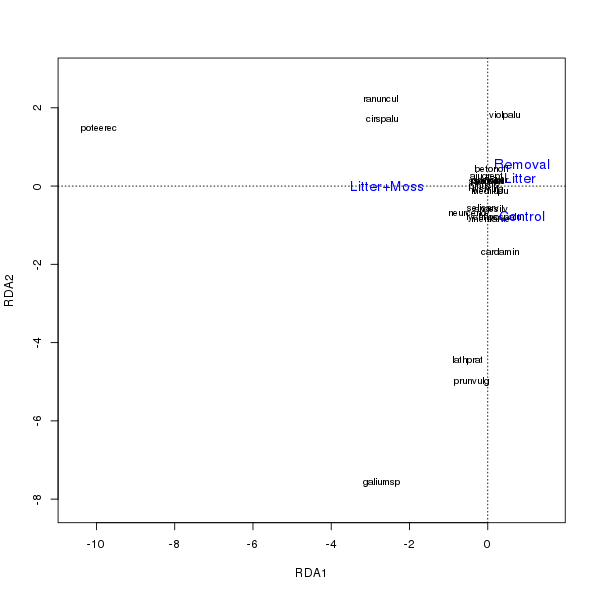

Analysing a randomised complete block design with vegan
Posted in
Tagged
Blogroll
It has been a long time coming. Vegan now has in-built, native ability to use restricted permutation designs when testing effects in constrained ordinations and in range of other methods. This new-found functionality comes courtesy of Jari (mainly) and my efforts to have vegan permutation routines use the permute package. Jari also cooked up a standard interface that we can use to drop this and some extra features neatly into any function we want; this allows us to have permutation tests run on many CPU cores in parallel, splitting the computational burden and reducing the run time of tests, and also a mechanism that allows users to pass a matrix of user-defined permutations to be used in tests. These new features are now fully working in the development version of vegan, which you can find on github, and which should be released to CRAN shortly. Ahead of the release, I’m preparing some examples to show off the new capabilities; first off I look at data from a randomized, complete block design experiment analysed using RDA & restricted permutations.
To follow this example locally you’ll need to have version 2.1-43 or later of vegan installed. You can grab the sources from github and build it yourself, or grab a Windows binary from the Appveyor Continuous integration service that we’re using to test on that platform — you want the .zip file from the Artefacts. Once you’ve sorted out the installation, we can begin.
library("vegan")Loading required package: permute
Loading required package: lattice
This is vegan 2.1-43
library("gdata")gdata: read.xls support for 'XLS' (Excel 97-2004) files ENABLED.
gdata: read.xls support for 'XLSX' (Excel 2007+) files ENABLED.
Attaching package: 'gdata'
The following object is masked from 'package:stats':
nobs
The following object is masked from 'package:utils':
object.size
We’ll need gdata, and its read.xls() function, to read from the XLS format files that the data for the example come as.
The data set itself is quite simple and small, consisting of counts on 23 species from 16 plots, and arise from a randomised complete block designed experiment described by Špačková and colleagues (1998) and analysed by (Šmilauer and Lepš, 2014) in their recent book using Canoco v5.
The experiment tested the effects on seedling recruitment to a range of treatments
- control
- removal of litter
- removal of the dominant species Nardus stricta
- removal of litter and moss (mos couldn’t be removed without also removing litter)
The treatments were replicated replicated in four, randomised complete blocks.
The data are available from the accompanying website to the book Multivariate Analysis of Ecological Data using CANOCO 5 (Šmilauer and Lepš, 2014). They are supplied as XLS format files in a ZIP archive. We can read these into R directly from the website with a little bit of effort
## Download the data zip
furl <- "http://regent.prf.jcu.cz/maed2/chap15.zip"
td <- tempdir()
tf <- tempfile(tmpdir = td, fileext = ".zip")
download.file(furl, tf)
## list the files in the zip, we want the xls version (file 3)
fname <- unzip(tf, list = TRUE)$Name[3]
unzip(tf, files = fname, exdir = td, overwrite = TRUE) # unzip
datpath <- file.path(td, fname) # path to xls
## read the xls file, sheet 2 contains species data, sheet 3 the env
spp <- read.xls(datpath, sheet = 2, skip = 1, row.names = 1)
env <- read.xls(datpath, sheet = 3, row.names = 1)The block variable is currently coded as an integer and needs converting to a factor if we are to use it correctly in the analysis
env <- transform(env, block = factor(block))The gradient lengths are short,
decorana(spp)Call:
decorana(veg = spp)
Detrended correspondence analysis with 26 segments.
Rescaling of axes with 4 iterations.
DCA1 DCA2 DCA3 DCA4
Eigenvalues 0.1759 0.1898 0.11004 0.05761
Decorana values 0.2710 0.1822 0.07219 0.02822
Axis lengths 1.9821 1.4140 1.15480 0.87680
motivating the use of redundancy analysis (RDA). Additionally, we may be interested in how the raw abundance of seedlings change following experimental manipulation, o we may wish to focus on the proportional differences between treatments. The first case is handled naturaly by RDA. The second case will require some form of standardisation by samples, say by sample totals.
First, let’s test the first null hypothesis; that there is no effect of the treatment on seedling recruitment. This is a simple RDA. We should take into account the block factor when we assess this model for significance. How we do this illustrates two potential approaches to performing permutation tests
design-based permutations, where how the samples are permuted follows the experimental design, or
model-based permutations, where the experimental design is included in the analysis directly and residuals are permuted by simple randomisation.
There is an important difference between the two approach, one which I’ll touch on shortly.
We’ll proceed by fitting the model, conditioning on block to remove between block differences
mod1 <- rda(spp ~ treatment + Condition(block), data = env)
mod1Call: rda(formula = spp ~ treatment + Condition(block), data =
env)
Inertia Proportion Rank
Total 990.8000 1.0000
Conditional 166.1000 0.1676 3
Constrained 329.8000 0.3329 3
Unconstrained 494.9000 0.4995 9
Inertia is variance
Eigenvalues for constrained axes:
RDA1 RDA2 RDA3
284.81 30.83 14.20
Eigenvalues for unconstrained axes:
PC1 PC2 PC3 PC4 PC5 PC6 PC7 PC8 PC9
226.83 139.51 72.77 30.11 9.81 9.14 2.80 2.19 1.73
There is a strong single, linear gradient in the data as evidenced by the relative magnitudes of the eigenvalues (here expressed as proportions of the total variance)
eigenvals(mod1) / mod1$tot.chi RDA1 RDA2 RDA3 PC1 PC2 PC3
0.28746238 0.03111202 0.01432998 0.22893569 0.14080915 0.07344450
PC4 PC5 PC6 PC7 PC8 PC9
0.03038815 0.00989932 0.00922185 0.00282396 0.00221132 0.00174669
Design-based permutations
A design-based permutation test of these data would be on conditioned on the block variable, by restricting permutation of sample only within the levels of block. In this situation, samples are never permuted between blocks, only within. We can set up this type of permutation design as follows
h <- how(blocks = env$block, nperm = 999)Note that we could use the plots argument instead of blocks to restrict the permutations in the same way, but using blocks is simpler. I also set the required number of permutations for the test here.
Constrained ordinations in vegan are tested using the anova() function. New in the development version of the package is the permutations argument, which is the key to supplying instructions on how you want to permute to anova(). permutations can take a number of different types of instruction
an object of class
"how", whch contains details of a restricted permutation design thatshuffleSet()from the permute package will use to generate permutations from, ora number indicating the number of permutations required, in which case these are simple randomisations with no restriction, unless the
strataargument is used, ora matrix of user-specified permutations, 1 row per permutation.
To perform the design-based permutation we’ll pass h, created earlier, to anova()
set.seed(42)
p1 <- anova(mod1, permutations = h, parallel = 3)
p1Permutation test for rda under reduced model
Blocks: env$block
Permutation: free
Number of permutations: 999
Model: rda(formula = spp ~ treatment + Condition(block), data = env)
Df Variance F Pr(>F)
Model 3 329.84 1.9995 0.086 .
Residual 9 494.88
---
Signif. codes: 0 '***' 0.001 '**' 0.01 '*' 0.05 '.' 0.1 ' ' 1
Note that I’ve run this on three cores in parallel; this is another new feature of the development version of vegan and can considerably reduce the time needed to run permutation tests. I have four cores on my laptop but left one free for the other software I have running.
The overall permutation test indicates no significant effect of treatment on the abundance of seedlings. We can test individual axes by adding by = "axis" to the anova() call
set.seed(24)
p1axis <- anova(mod1, permutations = h, parallel = 3, by = "axis")Loading required package: parallel
p1axisPermutation test for rda under reduced model
Marginal tests for axes
Blocks: env$block
Permutation: free
Number of permutations: 999
Model: rda(formula = spp ~ treatment + Condition(block), data = env)
Df Variance F Pr(>F)
RDA1 1 284.81 5.1797 0.018 *
RDA2 1 30.83 0.5606 0.691
RDA3 1 14.20 0.2582 0.923
Residual 9 494.88
---
Signif. codes: 0 '***' 0.001 '**' 0.01 '*' 0.05 '.' 0.1 ' ' 1
This confirms the earlier impression that there is a single, linear gradient in the data set. A biplot shows that this axis of variation is associated with the Moss (& Litter) removal treatment. The variation between the other treatments lies primarily along axis two and is substantially less than that associated with the Moss & Litter removal.
plot(mod1, display = c("species", "cn"), scaling = 1, type = "n",
xlim = c(-10.5, 1.5))
text(mod1, display = "species", scaling = 1, cex = 0.8)
text(mod1, display = "cn", scaling = 1, col = "blue", cex = 1.2,
labels = c("Control", "Litter+Moss", "Litter", "Removal"))
In the above figure, I used scaling = 1, so-called inter-sample distance scaling, as this best represents the centroid scores, which are computed as the treatment-wise average of the sample scores.
Model-based permutation
The alternative permutation approach, known as model-based permutations, and would employ free permutation of residuals after the effects of the covariables have been accounted for. This is justified because under the null hypothesis, the residuals are freely exchangeable once the effects of the covariables are removed. There is a clear advantage of model-based permutations over design-based permutations; where the sample size is small, as it is here, there tends to be few blocks and the resulting design-based permutation test relatively weak compared to the model-based version.
It is simple to switch to model-based permutations, be setting the blocks indicator in the permutation design to NULL, removing the blocking structure from the design
setBlocks(h) <- NULL # remove blocking
getBlocks(h) # confirmNULL
Next we repeat the permutation test using the modified h
set.seed(51)
p2 <- anova(mod1, permutations = h, parallel = 3)
p2Permutation test for rda under reduced model
Permutation: free
Number of permutations: 999
Model: rda(formula = spp ~ treatment + Condition(block), data = env)
Df Variance F Pr(>F)
Model 3 329.84 1.9995 0.068 .
Residual 9 494.88
---
Signif. codes: 0 '***' 0.001 '**' 0.01 '*' 0.05 '.' 0.1 ' ' 1
The estimated p value is slightly smaller now. The difference between treatments is predominantly in the Moss & Litter removal with differences between the control and the other treatments lying along the insignificant axes
set.seed(83)
p2axis <- anova(mod1, permutations = h, parallel = 3, by = "axis")
p2axisPermutation test for rda under reduced model
Marginal tests for axes
Permutation: free
Number of permutations: 999
Model: rda(formula = spp ~ treatment + Condition(block), data = env)
Df Variance F Pr(>F)
RDA1 1 284.81 5.1797 0.010 **
RDA2 1 30.83 0.5606 0.735
RDA3 1 14.20 0.2582 0.960
Residual 9 494.88
---
Signif. codes: 0 '***' 0.001 '**' 0.01 '*' 0.05 '.' 0.1 ' ' 1
Chages in relative seedling composition
As mentioned earlier, interest is also, perhaps predominantly, in whether any of the treatments have different species composition. To test this hypothesis we standardise by the sample (row) norm using decostand(). Alternatively we could have used method = "total" to work with proportional abundances. We then repeat the earlier steps, this time using only model-based permutations owing to their greater power.
spp.norm <- decostand(spp, method = "normalize", MARGIN = 1)
mod2 <- rda(spp.norm ~ treatment + Condition(block), data = env)
mod2
eigenvals(mod2) / mod2$tot.chi
set.seed(76)
anova(mod2, permutations = h, parallel = 3)Call: rda(formula = spp.norm ~ treatment + Condition(block), data
= env)
Inertia Proportion Rank
Total 0.3726 1.0000
Conditional 0.0814 0.2184 3
Constrained 0.0725 0.1945 3
Unconstrained 0.2188 0.5871 9
Inertia is variance
Eigenvalues for constrained axes:
RDA1 RDA2 RDA3
0.04517 0.01718 0.01012
Eigenvalues for unconstrained axes:
PC1 PC2 PC3 PC4 PC5 PC6 PC7 PC8 PC9
0.08026 0.07074 0.02860 0.01916 0.00989 0.00585 0.00223 0.00167 0.00038
RDA1 RDA2 RDA3 PC1 PC2 PC3
0.12123276 0.04610541 0.02716385 0.21539133 0.18983329 0.07675497
PC4 PC5 PC6 PC7 PC8 PC9
0.05140906 0.02655227 0.01570519 0.00597888 0.00447093 0.00101031
Permutation test for rda under reduced model
Permutation: free
Number of permutations: 999
Model: rda(formula = spp.norm ~ treatment + Condition(block), data = env)
Df Variance F Pr(>F)
Model 3 0.072475 0.9939 0.449
Residual 9 0.218768
The results suggest no difference in species composition under the experimental manipulation.
That’s it for this post. In the next example I’ll take a look at a more complex example, one where model-based permutations can’t be used to test all the hypotheses we might want to in an experimental design.
Social